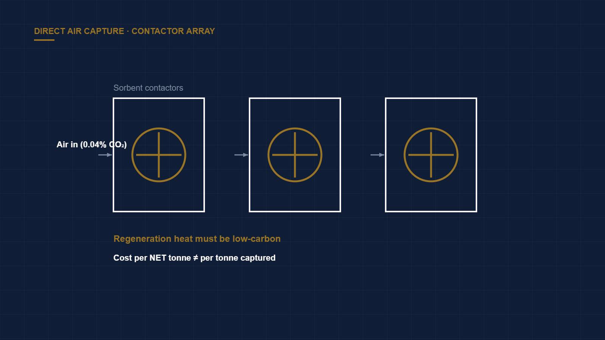

Why Most Direct Air Capture TEA Models Are Wrong
← Back to Intelligence Hub
Direct air capture (DAC) is real, necessary for hard-to-abate residual emissions, and — in most techno-economic models circulating among investors — modeled optimistically. The errors are systematic and they all point the same direction. Understanding them is the difference between underwriting a genuine carbon-removal business and funding a cost curve that never arrives.
The physics that sets the floor
CO₂ is 0.04% of the atmosphere. Capturing it means processing enormous volumes of air to concentrate a very dilute molecule, and thermodynamics imposes a minimum work of separation that no amount of engineering removes. The two dominant approaches handle this differently:
- Liquid solvent (high-temperature) — e.g., Carbon Engineering's KOH/calcium loop, which regenerates in a calciner at ~900 °C. Energy-intensive, but built from known industrial unit operations.
- Solid sorbent (low-temperature) — e.g., Climeworks' amine-functionalized sorbents cycled at ~80–100 °C. Lower-grade heat, but the sorbent is the cost and durability risk.
The terms that go missing from the model
- Sorbent degradation. Solid sorbents lose capacity with every adsorption–desorption cycle and are poisoned over time by oxygen and contaminants. A model that assumes a fixed sorbent cost across plant life understates OpEx substantially; sorbent make-up can be one of the largest recurring line items, and it is frequently omitted.
- Parasitic fan energy. Moving that much air through a contactor costs real electricity, and it scales with the dilute concentration. This load is often understated relative to the regeneration energy that gets all the attention.
- Clean heat sourcing. Regeneration heat must itself be low-carbon, or net removal collapses toward zero. Sourcing clean heat is simultaneously a cost, a siting constraint, and — if it competes with other decarbonization uses for that heat — an opportunity-cost question.
- Capacity factor and ramping. Like electrolyzers, DAC plants amortize heavy CapEx over output. Intermittent operation to chase cheap power raises the cost per tonne.
Captured versus removed
Model cost and tonnes on a net removed basis, not gross captured. The two diverge sharply once you subtract the emissions embodied in the energy feeding the plant.
When you re-run the numbers with honest sorbent-replacement schedules, real parasitic loads, and the carbon intensity of the energy supply, the cost curve steepens and the timeline to a sub-$100/tonne net cost stretches well beyond the headline projections the sector markets. Today's real all-in costs sit in the many-hundreds-of-dollars-per-tonne range; the path down is a manufacturing-scale and energy-cost story, not a discovery.
Verdict
DAC deserves capital — some residual emissions have no cheaper offset — but underwrite it against a net-tonne model with explicit, defensible sorbent and energy assumptions and a clean-heat plan. Any memo quoting a single blended cost-per-tonne with a near-term sub-$100 figure and no sorbent-life or energy-carbon detail has not done the work.